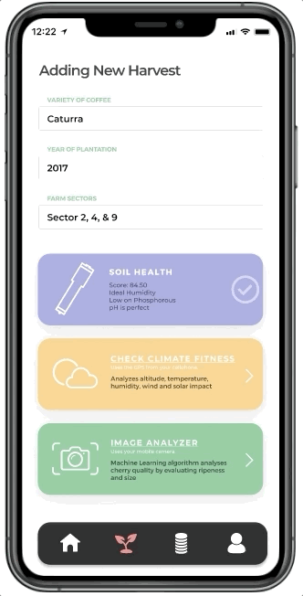

Alma De Cafe
For the last 400 years of coffee industry, the focus has never been on the heart of coffee - farmers. This project is an initiative to defining the Fourth Wave Coffee Movement.
Alma De Cafe is a low-tech IoT platform that assists coffee farmers to manage and improve their farm produce and connect with roasters globally.
Within the last decade due to rising pressure from climate change and unforeseen fluctuations in the global market, growing coffee has become a difficult task and it has forced many farmers to look for diversification and in dire scenarios leave cultivating a multi-generational crop altogether.
This project is an inquiry on how we might enable small coffee farmers to discover the quality of their coffee and help create a long-term relationship with global buyers?
Alma de Cafe has three major modules
Module 1: Quality Assessment
Firstly, there is a soil health module that takes in soil moisture, pH, temperature, macro & micro-nutrients.

Secondly, there is a climate/topography fitness module that takes in altitude, temperature ranges, humidity, & rainfall patterns and predicts the favourability of the area for growing coffee.
Thirdly, an image recognition module using a Machine learning algorithm to grade the coffee cherry basis size and color. This helps us in knowing the ripeness and quality of the cherry.

C-Score (composite score) is calculated from weighted averages from the individual scores from the soil, climate, & image analyzer.
During the produce season, a projected C-score with the expected price is available for all varieties which can be used to take any actionable steps to improve the C-score. During the harvest season, a final C-score are printed.
Module 2: Access to Global Market
Using the C-Score and expected price, the farmer inputs the available harvest amount for purchase. The inventory is matched with global demands.
Module 3: Ongoing Relationship
The roaster/buyer side platform comes with the functionality of giving the farmer due credit, reserving coffee for the next harvest, and making any customizations if needed.
By leveraging low-tech and existing mobile infrastructure, Alma De Cafe lowers the entry barrier for small farmers to tap into the specialty coffee market by selling high-quality coffee to buyers globally.